PONTIFICIA UNIVERSIDAD CATÓLICA DEL ECUADOR
Informe técnico del prototipo Apex Sports
Evaluación del estado actual frente a los criterios de la actividad
Versión publicada: https://jjamesrxzn7.github.io/E-commerce/
1. Evaluación del prototipo frente a la rúbrica
Apex Sports es un prototipo de tienda deportiva en español, implementado con HTML, CSS y JavaScript. La versión ampliada separa el inicio, las categorías, las fichas y los favoritos en documentos independientes, además del carrito y el flujo de checkout. En la revisión local, el catálogo y las fichas se cargaron mediante la API configurada en el frontend.
index.html, categoria.html, producto.html, favoritos.html, carrito.html, entrega.html, pago.html y pedido-confirmado.html. Categoría y ficha son páginas reales con parámetro ?id=, no secciones ancladas.
No se asigna una calificación estimada. La evaluación formal corresponde al docente y la rúbrica aplica penalizaciones por errores funcionales, de usabilidad o accesibilidad.
Acceso y conectividad observada
La versión local respondió en el navegador y mostró productos obtenidos desde el catálogo de la API. api-config.js configura el endpoint HTTPS; catalogo-compartido.js consulta el recurso de productos. Esto comprueba la conexión del navegador con el servicio de catálogo en esa sesión, pero no sustituye una inspección independiente de PostgreSQL ni demuestra persistencia de cada operación del checkout. Los cambios documentados aún deben publicarse para que aparezcan en la URL remota.
Fuentes de implementación: api-config.js, api-client.js, catalogo.js, archivos HTML de la tienda y README.md.
Principios de diseño observables: jerarquía tipográfica y contraste de bloques para guiar la atención; alineación en grillas; espaciado consistente; simplicidad en checkout; affordance mediante botones, enlaces, radios y mensajes de estado. Estas observaciones describen la implementación, no una prueba con usuarios.
Nota para la entrega académica: la consigna limita el texto generado por IA al 5% y la coincidencia al 9%. Este documento es un borrador asistido y no puede certificar esos porcentajes; revisa la política de la asignatura, personaliza la redacción con tus observaciones y verifica el resultado en las herramientas autorizadas por el curso.
2. Explicación del modelo mental que sigue la interfaz
2.1. Flujo de navegación: diagrama de estados
La navegación separa el inicio, la página de categoría, la ficha de producto, favoritos, carrito y las tres etapas de compra. Las acciones de favoritos, entrega y pago requieren sesión; cerrar el diálogo de autenticación cancela la acción pendiente.
Ramas adicionales
Favoritos solicita sesión y conserva la lista en la cuenta mediante la API. Desde el catálogo se puede volver de la ficha, cambiar de categoría y seguir explorando.
Límite de confirmación
La respuesta reciente se conserva en sessionStorage. Si se abre directamente la página de confirmación o se pierde esa sesión, no se muestra el pedido; no se consultó su historial a la API durante esta revisión.
2.2. Guía de estilo y comportamiento de la interfaz
| Elemento | Definición observada | Aplicación |
|---|---|---|
| Color principal | #17324D azul profundo | Marca, encabezados, botones y hero. |
| Color secundario | #F4F1E8 marfil | Tarjetas, fondos suaves y estados seleccionados. |
| Acento | #A84328 terracota | Etiquetas, mensajes importantes y foco visible. |
| Complementarios | #667581 gris; #FFFFFF blanco | Texto secundario, bordes y fondos. |
| Tipografía | Segoe UI, Arial, sans-serif | Jerarquía de encabezados, texto y controles. |
| Iconografía e imágenes | SVG en marca/controles y representaciones de productos; galería de imágenes en el detalle. | Los iconos decorativos se ocultan a tecnologías de asistencia; los productos tienen texto alternativo. |
Componentes e interacciones
| Componente | Respuesta esperada del sistema |
|---|---|
| Catálogo y búsqueda | Cargar productos por API; abrir categorías y fichas HTML, y filtrar por búsqueda. |
| Ficha de producto | Mostrar imágenes, precio, descripción, cantidad, relacionados y acción de agregar. |
| Favoritos | Solicitar acceso y sincronizar el estado, contador y lista con la API asociada a la cuenta. |
| Carrito | Mostrar productos, cantidades, subtotal, quitar y continuar. |
| Entrega | Validar teléfono/dirección/ciudad y conservar la opción elegida para el checkout. |
| Pago/orden | Confirmar la orden y mostrar su estado pendiente sin procesar cobros reales. |
3. Aplicación de principios de usabilidad y accesibilidad
3.1. Fundamentos WCAG 2.2 y heurísticas de Nielsen
Se ejecutaron comprobaciones automatizadas en navegador sobre las ocho páginas, en viewports de 1440 × 1000 y 390 × 844 px: un <main> por documento, ausencia de identificadores duplicados, texto alternativo en imágenes, nombres accesibles en controles, etiquetas en campos de formulario y desbordamiento horizontal. No se encontraron fallos en esas comprobaciones. Una revisión programática de contraste de texto visible tampoco detectó ratios inferiores a 4,5:1 para texto normal o 3:1 para texto grande; se ajustaron el acento de la llamada principal y las pestañas no seleccionadas del diálogo.
La revisión manual por teclado confirmó el foco visible en “Saltar al contenido”, el primer tramo de tabulación en la ficha y el acceso con Tab/Enter al botón de cierre del diálogo. Las capturas y la comprobación responsive abarcan escritorio y un viewport móvil de 390 × 844 px. No hay un escáner axe/Lighthouse disponible en el entorno y no se probaron lector de pantalla, zoom al 200/400 %, todos los criterios WCAG 2.2 ni otros navegadores. Por ello, estos resultados no certifican conformidad WCAG 2.2 AA.
Heurísticas de Nielsen documentadas
La guía del proyecto considera aplicadas las heurísticas 1–4 y 6–8; prevención de errores (5) es parcial; recuperación de errores (9) y ayuda/documentación contextual (10) se reconocen como no implementadas. La guía actualizada coincide con la interfaz: una sola opción de confirmación pendiente, sin datos de tarjeta.
Restricciones de la demostración
- No procesa pagos ni habilita despacho; las tarifas de envío no están configuradas.
- El checkout está protegido por autenticación y no se usó una cuenta real ni se creó un pedido de prueba.
- La URL de confirmación abierta sin un pedido reciente informa que no hay resumen disponible.
- Los favoritos se consultan y actualizan mediante la API autenticada; no se verificó el flujo con una cuenta de prueba.
- La revisión no equivale a una auditoría exhaustiva WCAG, prueba de penetración ni validación de persistencia en PostgreSQL.
4. Frames finales del prototipo
4.1. Página HTML 1 de 8: inicio
index.html presenta la portada, categorías destacadas, carruseles y búsqueda. Los enlaces de categoría, ficha y favoritos conducen a documentos HTML independientes.
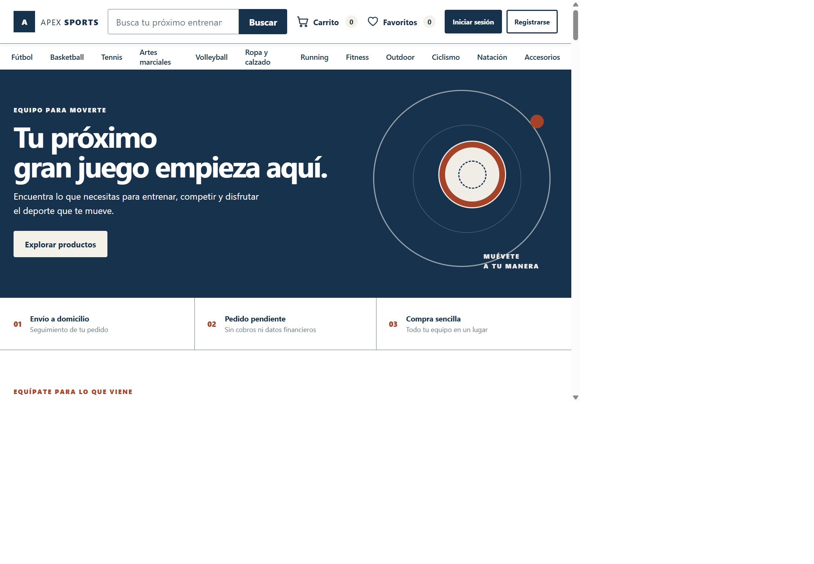
4.2. Prueba responsive
Las ocho páginas se comprobaron en un viewport móvil de 390 × 844 px. No se observó desbordamiento horizontal en ninguno de los documentos. Las siguientes capturas muestran el inicio y las páginas de categoría, producto y favoritos; la misma comprobación de ancho se repitió para carrito, entrega, pago y confirmación.
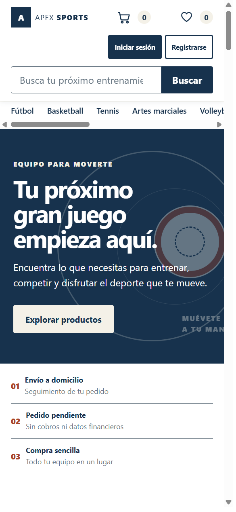
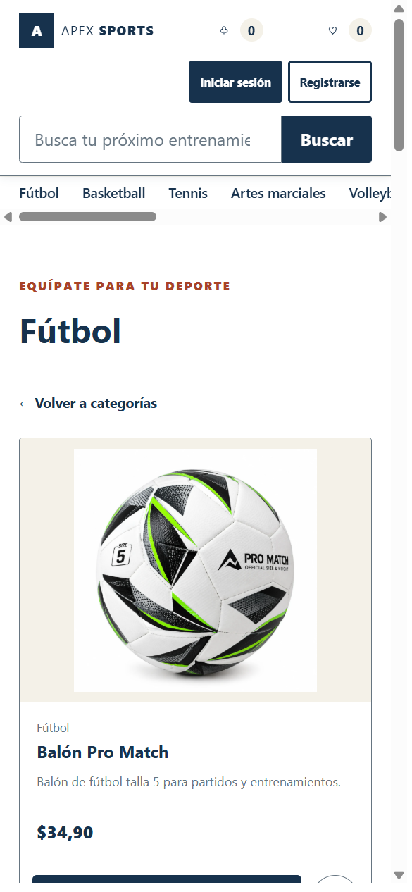
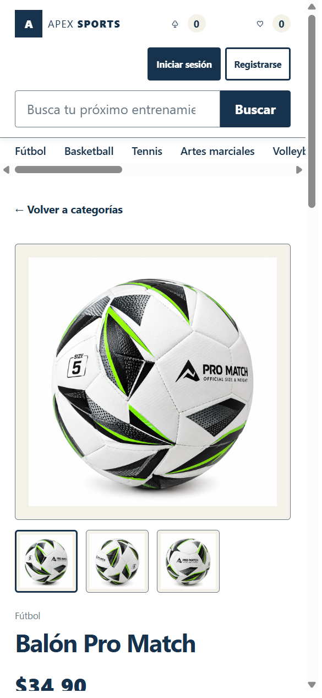
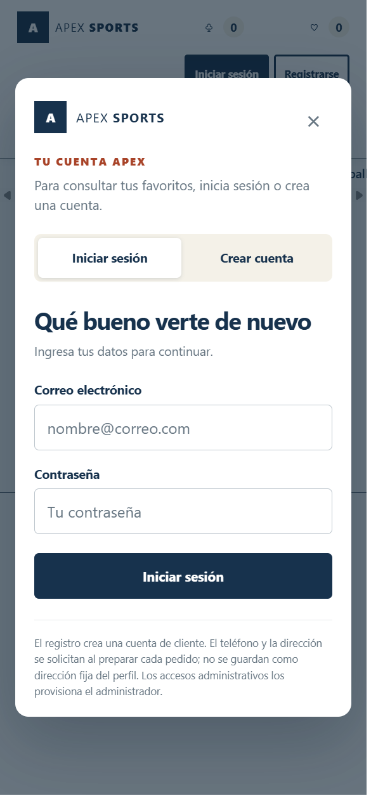
4.3. Página HTML 2 de 8: categoría
categoria.html?id=futbol es una página independiente que muestra los diez productos disponibles de Fútbol. Se comprobó el enlace desde la portada, la carga de productos y el acceso a cada ficha.
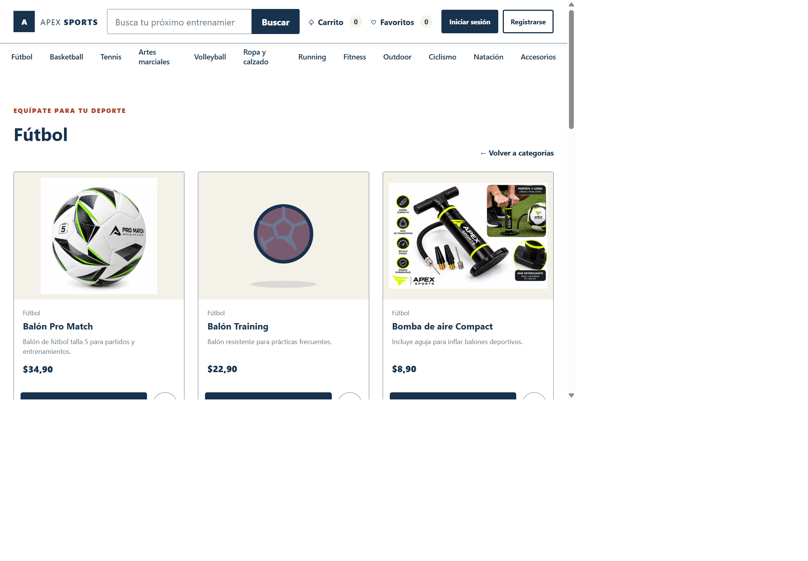
4.4. Página HTML 3 de 8: ficha de producto
producto.html?id=futbol-balon-pro-match presenta galería, descripción, precio, selector de cantidad y tres productos relacionados. Se probó añadir dos unidades al carrito y se verificó el identificador, la cantidad y el mensaje de confirmación; los datos locales de prueba se retiraron después.
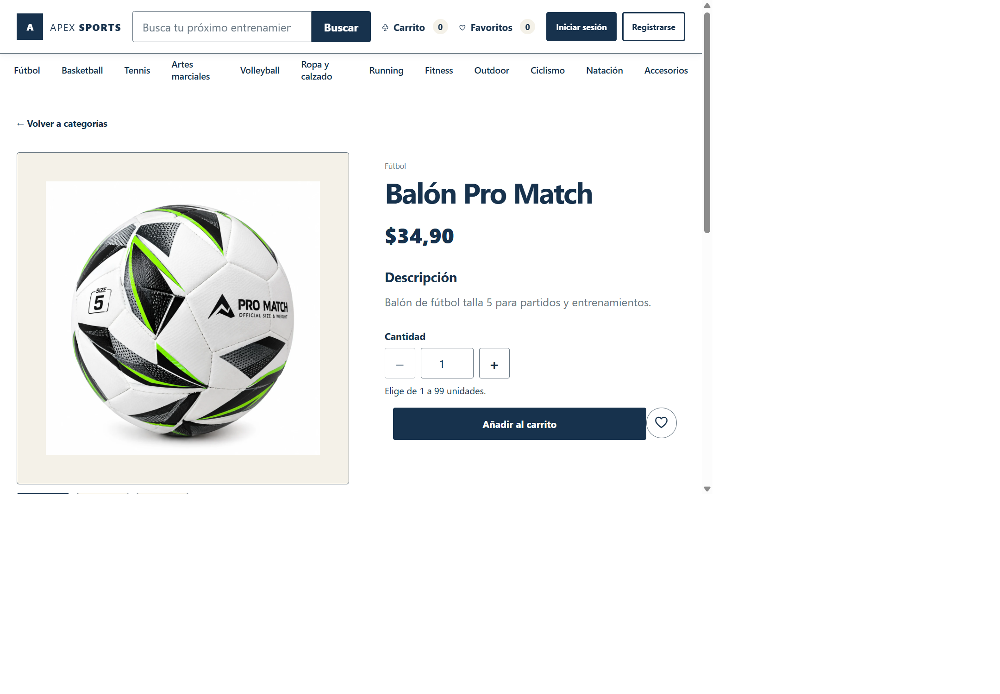
4.5. Página HTML 4 de 8: favoritos
favoritos.html solicita autenticación y carga la lista asociada a la cuenta desde la API. La captura documenta el estado de acceso sin iniciar sesión ni crear una cuenta; por ello, no se registró una prueba de sincronización entre dispositivos.
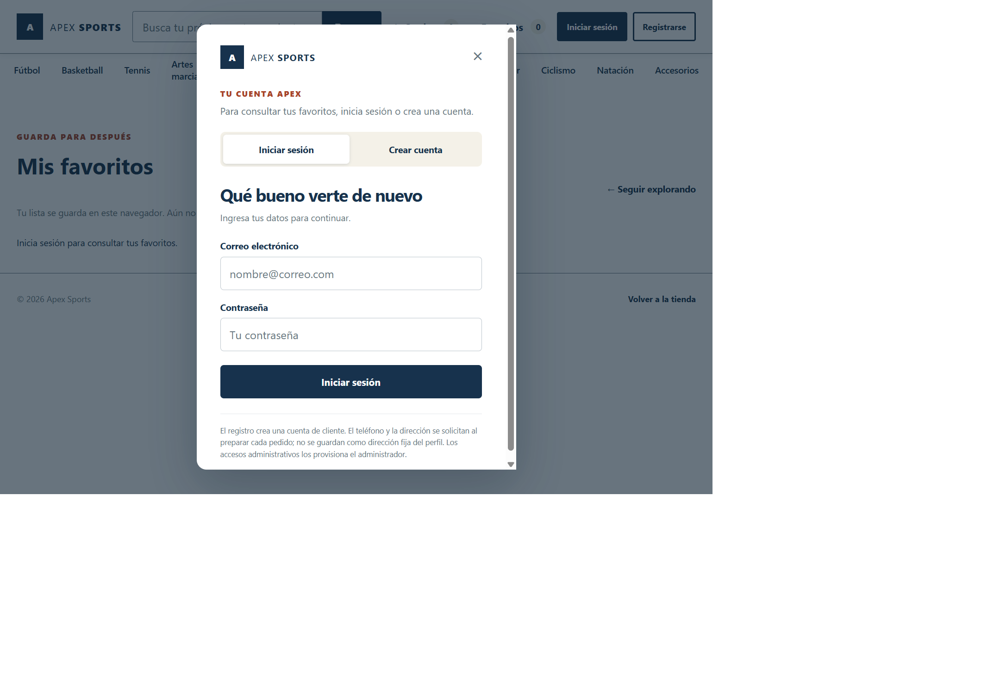
4.6. Página HTML 5 de 8: carrito
carrito.html muestra el estado vacío en una sesión nueva. El enlace para continuar aparece deshabilitado hasta que se agregan productos.
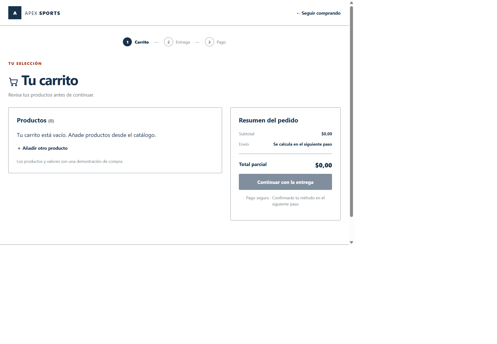
4.7. Página HTML 6 de 8: entrega
entrega.html presenta datos del pedido y opciones de entrega. Al abrir la ruta sin sesión se muestra primero el diálogo de autenticación.
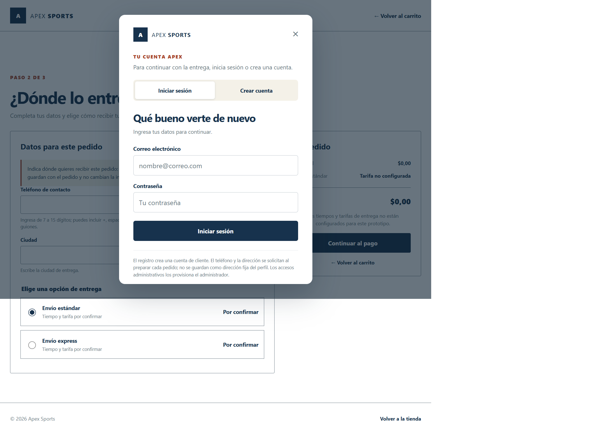
4.8. Página HTML 7 de 8: pago
pago.html permite confirmar una orden pendiente y no procesa pagos. Para completar el flujo se necesita una sesión autenticada y datos de entrega válidos.
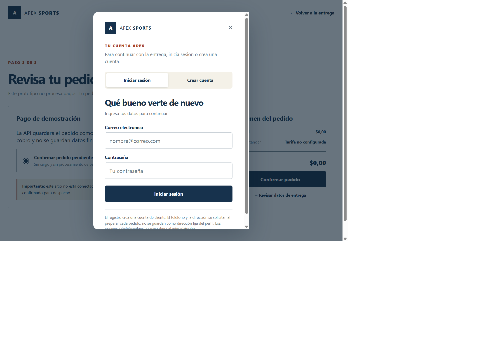
4.9. Página HTML 8 de 8: confirmación
pedido-confirmado.html requiere un resumen reciente almacenado en la sesión. Al abrir la URL directamente no encuentra un pedido y muestra los campos como no disponibles; no es una confirmación de compra válida.
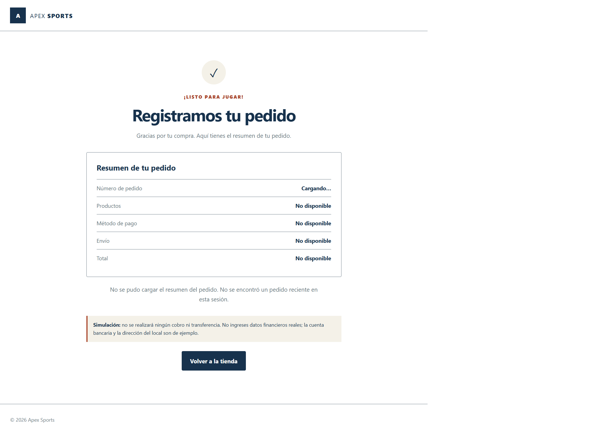
No se usó cuenta de prueba ni se creó un pedido real. No se efectuaron cobros.
5. Conclusiones
- La versión local alcanza ocho páginas HTML independientes y los flujos principales de categoría, ficha y carrito funcionan contra el catálogo de la API. La URL publicada aún requiere actualizarse para incluir estos cambios.
- La evidencia visual cubre las ocho páginas y la comprobación responsive encontró cero desbordamientos horizontales a 390 × 844 px; no sustituye pruebas en más dispositivos y navegadores.
- El flujo de compra está diseñado como simulación: exige sesión para entrega y pago, registra pedidos pendientes según el código frontend y no procesa dinero. La confirmación depende del almacenamiento de sesión y no se pudo validar una compra completa sin credenciales de prueba.
- Las comprobaciones automáticas y manuales realizadas no encontraron los problemas básicos evaluados, pero no permiten declarar conformidad WCAG 2.2 AA: faltan un escáner especializado, lector de pantalla, ampliación y validación completa de criterios.